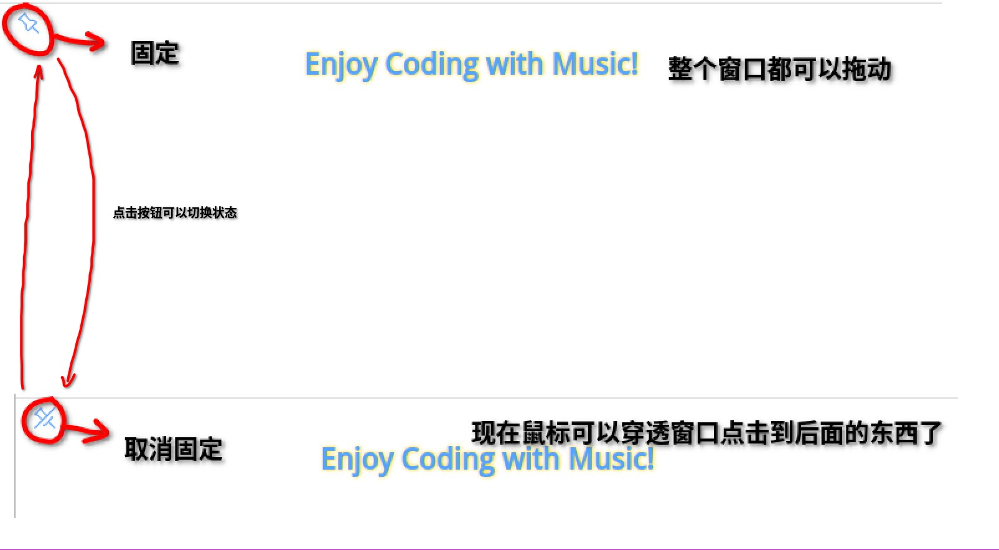
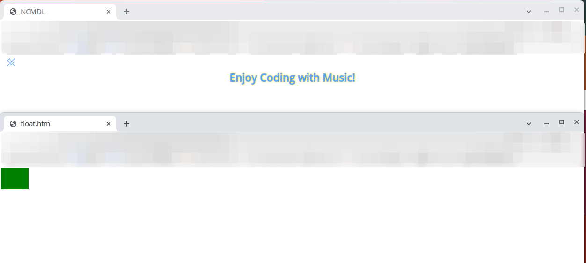

最近由于一些机缘巧合，需要写一个桌面悬浮歌词应用，便决定用 Electron 来做了。
学了个把小时的 Electron 开发就开始折腾，踩的坑自然不会少。一个最主要的问题也就是透明窗口的实现。
废话嘛，你要做一个悬浮歌词应用，肯定要做到几个基本的功能吧：实时显示歌词 & 翻译、进度条管理、背景透明、位置锁定和鼠标点击穿透。

要是没有鼠标点击穿透的话挂那么大一个悬浮窗其他的软件也就没法用了罢。
# Win/MacOS 的解决方案
Electron 的 BrowserWindow 类提供了一个 transparent 的选项，可以让窗口透明。然而这个透明只是看上去而已，鼠标操作依然会落在窗口中，而 Electron 给了一个 win.setIgnoreMouseEvents(true) API 用于让窗口忽略所有的鼠标事件，这样，你的鼠标点击就会穿过这个窗口落在后面。
然而这意味着你的窗口会完全对鼠标失去相应 —— 如果你绑定了一个按钮设置为触发这个选项，那你就别再想取消掉了。
显然不好。为此， win.setIgnoreMouseEvents(true, {forward: true}) 增加了一个 forward 的选项，即忽略鼠标消息，但是将鼠标移动事件转发到窗口中。
这样呢，我们可以对某个部分监听 mouseenter 和 mouseleave 事件，当鼠标进入了这块区域，我们设置 win.setIgnoreMouseEvents(true, {forward: true}) ，当鼠标离开这块区域，我们设置 win.setIgnoreMouseEvents(false) 。这也就实现了鼠标穿透这一块区域的效果。
在 macOS 和 Windows 平台上转发鼠标事件
利用这个思路的话，有不少的奇技淫巧，可以实现各种形状的透明窗口效果。
很不幸的是，这个 API 在 Linux 上面是不可用的， forward 这个参数根本就不认。
# Linux 的解决方案
参考 Github 上面的 issue 中有人提出的思路，我们可以通过叠加一个透明窗口的方式来实现有选择性的鼠标穿透。
Electron click through transparency example
我们在主窗口的基础上，再叠加一个透明的窗口，需要鼠标操作的事件交给这个窗口来处理，主窗口的任务就是用来显示画面。

图上 NCMDL 这个 html 用来显示歌词，而 float.html 则是用来放置按钮的。
将 NCMDL 的 html 绑定在 mainWindow 上，将 float.html 绑定在 floatWindow 上。 mainWindow 用来显示， floatWindow 覆盖了 mainWindow 中按钮的位置，用来操作。
接下来我们添加：
// 标识主窗口是否是能够被鼠标穿透的状态 | |
let pinned_status = false; | |
ipcMain.on("toggleFixedWindow", (event, status) => { | |
pinned_status = status; | |
mainWindow.webContents.send("toggleButtonStatus", pinned_status); | |
mainWindow.setIgnoreMouseEvents(pinned_status); | |
}); |
我们设置一个 toggleFixedWindow 事件，传入参数 status 用来设置主窗口的 pinned_status 。
而 float.html 中的按钮则绑定一个事件：
// 前端存储状态 | |
let pinned_status = false; | |
const button_pinned = document.getElementById("toggle-pinned"); | |
button_pinned.addEventListener("click", () => { | |
pinned_status = !pinned_status; | |
lyricsapi.toggleFixedWindow(pinned_status); // just send signal here | |
}); |
这个按钮的点击将通过 IPC 传递到主进程中：
const { contextBridge, ipcRenderer } = require("electron"); | |
contextBridge.exposeInMainWorld("lyricsapi", { | |
toggleFixedWindow: (status) => { | |
ipcRenderer.send("toggleFixedWindow", status); | |
} | |
}); |
因为 floatWindow 设置了状态，暂时还不会影响到 mainWindow 中的显示，故前面在设置主窗口 setIgnoreMouseEvent 的时候，还增加了一句：
// 标识主窗口是否是能够被鼠标穿透的状态 | |
let pinned_status = false; | |
ipcMain.on("toggleFixedWindow", (event, status) => { | |
pinned_status = status; | |
mainWindow.webContents.send("toggleButtonStatus", pinned_status); // 修改按钮状态 | |
mainWindow.setIgnoreMouseEvents(pinned_status); | |
}); |
增加一个 IPC 接口：
contextBridge.exposeInMainWorld("lyricsapi", { | |
toggleFixedWindow: (status) => { | |
ipcRenderer.send("toggleFixedWindow", status); | |
}, | |
toggleButtonStatus: (callback, status) => { // 修改按钮状态 | |
console.log("toggleButtonStatus" + status); | |
ipcRenderer.on("toggleButtonStatus", callback); | |
} | |
}); |
toggleButtonStatus 对应了 mainWindow 中一个回调函数：
function registerButtonChangeEvent() { | |
// 悬浮歌词界面的按钮应该跟随跟随锁定状态 | |
var changedButton = document.getElementById("ignore-click"); | |
window.lyricsapi.toggleButtonStatus((event, status) => { | |
console.log("Change button status: ", status); | |
if (status) { | |
changedButton.innerHTML = | |
'<img src="../assets/unpin.svg" class="pin">'; | |
} else { | |
changedButton.innerHTML = | |
'<img src="../assets/pin.svg" class="pin">'; | |
} | |
}); | |
} |
这样子， mainWindow 的按钮上的图标就会随着 floatWindow 的按钮的点击而改变， mainWindow 也会随之锁定和取消。
剩下的还有一些小问题，比如说两个窗口应该同步移动，否则上面的窗口错位之后就没法正常操作了，这个可以监听 mainWindow 的 move 事件，让 floatWindow 也跟着移动。然后要注意一下， floatWindow 应该盖在 mainWindow 的上面，否则非锁定状态下按钮会被盖住无法互动。
const moveWindow = () => { | |
// 把浮动窗口塞到顶层 | |
mainWindow.moveTop(); | |
floatWindow.moveTop(); | |
// 浮动窗口跟随主窗口移动 | |
floatWindow.setPosition( | |
mainWindow.getPosition()[0], | |
mainWindow.getPosition()[1] | |
); | |
}; | |
app.on("ready", () => { | |
console.log("App is ready"); | |
createMainWindow(); | |
createFloatWindow(); | |
mainWindow.addListener("move", moveWindow); // 主窗口移动时，浮动窗口也跟着移动 | |
}); |
这样子会导致呢，主窗口移动到目的地之后，浮动窗口会瞬移到主窗口的位置上，不过反正是透明的嘛，看不出来。
如果主窗口大小改变了，浮动窗口也要跟着改变大小，这个和前面也类似。
# 总结
总的来说，这个方案也就是一个 dirty fix，后面还是寄希望于 Electron 能够提供更好的解决方案。
现在这个做法增加了不少的复杂性，效果也不能算的上可靠，对于复杂的窗口形状更是无能为力，不过也算是一个可行的方案罢了。